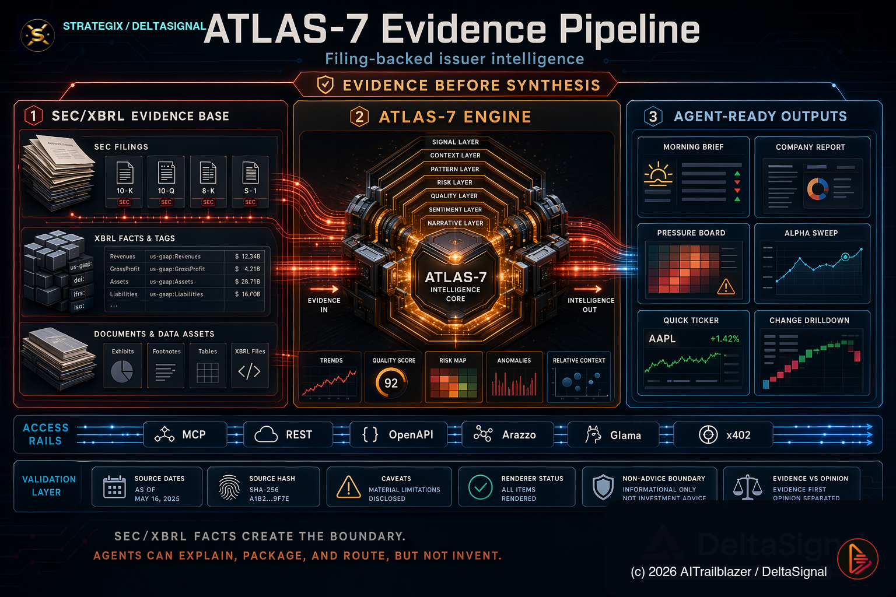

<!doctype html>
<html lang="en">
<head>
  <meta charset="utf-8">
  <meta name="viewport" content="width=device-width, initial-scale=1">
  <title>DeltaSignal Gemini AI Agent | Google for Startups AI Agents Challenge</title>
  <meta name="description" content="DeltaSignal Gemini AI Agent is a Google Cloud-native autonomous B2B issuer-intelligence agent using Gemini, Cloud Run, MCP-compatible tools, SEC/XBRL-grounded evidence, and TripCode research memory.">
  <meta property="og:title" content="DeltaSignal Gemini AI Agent">
  <meta property="og:description" content="Autonomous issuer intelligence for evidence-backed B2B market decisions. Built for the Google for Startups AI Agents Challenge.">
  <meta property="og:image" content="./assets/atlas7-evidence-pipeline.png">
  <style>
    html {
      background: #05070b;
      color: #fff8ef;
      font-family: Inter, ui-sans-serif, system-ui, -apple-system, BlinkMacSystemFont, "Segoe UI", sans-serif;
      line-height: 1.45;
      scroll-behavior: smooth;
    }
    body { margin: 0; min-height: 100vh; }
    delta-agent-landing:not(:defined) { display: block; padding: 32px; }
  </style>
</head>
<body>
  <delta-agent-landing></delta-agent-landing>

  <script id="strategix-landing-contract" type="application/xml">
<StrategiXVisualSpec version="1.8" status="public-competition-landing-track3-a2a-linked" generated="2026-06-09" artifact="index.html">
  <CanonicalArtifact>
    <Title>DeltaSignal Gemini AI Agent Landing Page</Title>
    <Repository>aitrailblazer/deltasignal-ai-agent</Repository>
    <Challenge>Google for Startups AI Agents Challenge</Challenge>
    <ChallengeUrl>https://devpost.team/google-cloud-for-startups/hackathons/3197</ChallengeUrl>
    <ChallengeAccess>Devpost for Teams login required</ChallengeAccess>
    <ActiveSubmissionDeadline source="Devpost current state">2026-06-11</ActiveSubmissionDeadline>
    <LocalPdfBoundary>A local stale reference lists June 5, 2026; the active working deadline has been updated from the current Devpost state to June 11, 2026. Source reference files are not linked from the public landing page.</LocalPdfBoundary>
    <Track>Track 1 Build</Track>
    <OfficialSpec>docs/DeltaSignal_AI_Agent_Submission_Packet_2026_06_04.html</OfficialSpec>
    <HeroImage>assets/atlas7-evidence-pipeline.png</HeroImage>
  </CanonicalArtifact>
  <Purpose>Present the competition project as a judge-readable landing page with one official spec, runnable code, and clear Google Cloud / Gemini / MCP alignment.</Purpose>
  <ProductContract>
    <Summary>DeltaSignal Gemini AI Agent is a new autonomous B2B issuer-intelligence agent that converts fragmented public-company risk signals and prior research memory into evidence-backed action briefs.</Summary>
    <Buyer>Analysts, funds, corporate finance teams, startup operators, and business users who need faster issuer-risk triage.</Buyer>
    <CoreWorkflow>User asks an issuer question; the coordinator decomposes the task; specialist lanes retrieve stress, evidence, and peer context; Gemini synthesizes a grounded brief; review output preserves caveats and next actions.</CoreWorkflow>
    <EvidenceBoundary>ATLAS-7 is disclosed as an existing authorized integration and data source. The submitted competition project is the new autonomous agent and orchestration layer.</EvidenceBoundary>
    <ResearchMemoryExtension>TripCodes and Substack Rivers extend the same agent into subscriber research memory: resolve an article, reconstruct the thesis River, compare it with filing evidence, and surface what changed.</ResearchMemoryExtension>
    <CompetitionThesis>TripCodes are the resolver layer that turns static financial prose into portable, inspectable, executable research memory for Gemini and MCP-aware agents.</CompetitionThesis>
    <CompositeMCPContract>deltasignal_resolve_tripcode_research_packet is the one-call subscriber resolver contract: TripCode -> article object -> River -> filing-backed evidence refs -> thesis evolution map -> boundaries. The deployed Go service implements this boundary now, and the public ATLAS-7 MCP endpoint exposes the composite tool.</CompositeMCPContract>
    <ProofCase>In the deployed HUT case, one TripCode resolved the current article through Cloud Run, called the live ATLAS-7 MCP composite resolver, returned a structured 10-node HUT River research packet with filing evidence refs, produced a Gemini summary, preserved session memory, and returned monitor-next items and scenario framing.</ProofCase>
    <RuntimeAutonomyClaim>The submitted agent performs the runtime research workflow autonomously: TripCode resolution, River reconstruction, evidence comparison, session memory, Gemini synthesis, boundaries, and usage reporting.</RuntimeAutonomyClaim>
    <TrackOneBuildClaim>Track 1 Build is shown as an autonomous business workflow: a user gives one TripCode or issuer prompt, the Cloud Run agent securely calls MCP tools, reconstructs research memory, compares evidence, preserves session state, synthesizes with Gemini, and returns a diligence packet with next actions.</TrackOneBuildClaim>
    <PositioningLock>TripCodes convert financial commentary into structured research memory: the bridge from prose to evidence.</PositioningLock>
  </ProductContract>
  <CompetitorContrast>
    <Contrast>Disclosure benchmarking and filing-change agents are strong at document comparison, but usually treat archives as static search indexes.</Contrast>
    <Contrast>Finrep.ai, V7 Go, and Pathway LiveAI can detect filing changes or run multi-agent RAG, but they do not expose one stable article TripCode that reconstructs prior claims, River memory, current evidence, and monitor-next workflows.</Contrast>
    <Contrast>Generic deep-research agents add multi-step retrieval, but do not preserve proprietary thesis Rivers or reconcile prior article claims against newer filing evidence.</Contrast>
    <Contrast>DeltaSignal differentiates with MCP River retrieval, ATLAS-7 evidence boundaries, TripCode provenance anchors, and subscriber-visible monitor-next workflows.</Contrast>
  </CompetitorContrast>
  <CompetitionFit>
    <ContestSiteAccess>Official Contest Site is Devpost for Teams and requires login; the landing page exposes the competition name and context publicly.</ContestSiteAccess>
    <Deadline>Active submission deadline: June 11, 2026. Older local reference material listed June 5 and is superseded by the current Devpost project state.</Deadline>
    <Fit>Autonomous agent for a concrete B2B business workflow.</Fit>
    <Fit>Google Cloud-native runtime through a validated Cloud Run service, with a future Agent Runtime path.</Fit>
    <Fit>Gemini synthesis through Vertex AI is verified in the deployed HUT TripCode flow.</Fit>
    <Fit>MCP-compatible tool boundary for secure external context and evidence retrieval, with deterministic fallback only as a resilience path.</Fit>
    <Fit>TripCode resolver layer makes newsletter research executable by agents rather than leaving it as passive archive content.</Fit>
    <Fit>The submitted agent performs the runtime research workflow autonomously after the user provides one TripCode or issuer prompt.</Fit>
    <Fit>The agent moves beyond reporting by executing a multi-step diligence process: resolve, retrieve, reconstruct, compare, synthesize, remember, and disclose.</Fit>
    <Fit>Deterministic demo mode so judges can run and inspect the workflow without private data access.</Fit>
  </CompetitionFit>
  <TrackOneChecklist>
    <Item status="implemented">Complex business problem: issuer diligence across prior research, filings, caveats, and monitor-next workflows.</Item>
    <Item status="implemented">Autonomous agent workflow: one prompt triggers tool calls, River reconstruction, evidence comparison, synthesis, session memory, and usage reporting.</Item>
    <Item status="implemented">Secure external tool connection: MCP-compatible ATLAS-7 composite resolver with protected API key and bounded response contract.</Item>
    <Item status="implemented">Managed Google Cloud runtime: Cloud Run service with health route, protected judge routes, bounded scale, and validation artifacts.</Item>
    <Item status="implemented">State and memory: session_id stores compact River continuity for second-turn follow-ups.</Item>
    <Item status="implemented">Gemini path: Vertex AI synthesis over resolved research packets and memory context.</Item>
  </TrackOneChecklist>
  <TrackFit>
    <Track name="Track 1 Build">Working Cloud Run demo: resolve TripCode -> reconstruct River -> compare to evidence -> preserve memory -> show cost.</Track>
    <Track name="Track 2 Optimize">Evidence fidelity, runtime hardening, and testing are deployed: provenance-carrying brief responses, runtime telemetry, structured logs, protected-route rate limits, memory backend disclosure, and a fresh 100.0 percent coverage gate.</Track>
    <Track name="Track 3 Path">A2A coordination now has a first implemented slice: public agent-card discovery plus protected /a2a TripCode task endpoint for Gemini Enterprise and Marketplace readiness.</Track>
  </TrackFit>
  <CurrentReadiness>
    <Ready>The Cloud Run service is live at https://deltasignal-ai-agent-mhaufviwaq-uc.a.run.app with public health and protected judge routes.</Ready>
    <Ready>The deployed judge script resolves TF-SUB-9DA70A7F98, returns the 10-node HUT River research packet, produces a Gemini summary, preserves session memory, and updates the usage ledger.</Ready>
    <Ready>The public ATLAS-7 MCP endpoint exposes the composite TripCode resolver; the response preserves structured research_packet data and keeps deterministic HUT fallback for resilience only.</Ready>
    <Ready>Latest Track 2 runtime-hardening validation is saved at artifacts/02_TRACK_2_OPTIMIZE__RUNTIME_HARDENING_CURRENT/20260609T033143Z-track2-rerun-validation/TRACK2_RERUN_VALIDATION_PROOF.html.</Ready>
    <Ready>Latest Track 2 coverage gate is saved at artifacts/02_TRACK_2_OPTIMIZE__RUNTIME_HARDENING_CURRENT/20260609T080753Z-track2-coverage-gate/TRACK2_COVERAGE_GATE_PROOF.html.</Ready>
    <Ready>Track 3 A2A refactor proof is saved at artifacts/04_TRACK_3_PATH__ARCHITECTURE_DOCUMENTED/20260609T083405Z-track3-a2a-refactor/TRACK3_A2A_REFACTOR_PROOF.html and deployed validation is saved at artifacts/03_DEPLOYMENT_HISTORY__CLOUD_RUN/20260609T085553Z-track3-a2a-cloudrun-deploy/TRACK3_A2A_CLOUD_RUN_DEPLOYMENT.html.</Ready>
    <Next>Record the three-minute judge demo using the deployed Track 2 service and saved request/response evidence.</Next>
  </CurrentReadiness>
  <CostDiscipline>
    <Budget>Google Cloud startup credits are limited to 500 USD for this challenge window.</Budget>
    <Control>Default mode is deterministic and low-cost; live Gemini and MCP calls are opt-in for judge testing.</Control>
    <Control>Cloud Run is configured with min-instances=0, max-instances=3, 512Mi memory, 1 CPU, and concurrency 80.</Control>
    <Control>Every successful test request can include local-estimate cost metadata when DELTASIGNAL_COST_TRACKING=true.</Control>
    <Boundary>Exact Google account spend and remaining credits require Cloud Billing export or the Billing console; the app estimate is immediate but not an official billing record.</Boundary>
  </CostDiscipline>
  <Architecture>
    <Component>Cloud Run HTTP service</Component>
    <Component>Go coordinator agent</Component>
    <Component>Go TripCode MCP wrapper routes: POST /v1/tripcode plus judge-friendly GET/POST /resolve</Component>
    <Component>Go session memory for compact River continuity snapshots</Component>
    <Component>Gemini TripCode synthesis over resolver packets and session memory</Component>
    <Component>Stress scanner specialist</Component>
    <Component>SEC/evidence specialist</Component>
    <Component>Peer analyst specialist</Component>
    <Component>Gemini via Vertex AI synthesis hook</Component>
    <Component>ATLAS-7 MCP/OpenAPI integration boundary</Component>
    <Component>TripCode resolver and Research River memory layer</Component>
    <Component>Structured B2B action brief output</Component>
  </Architecture>
  <PublicSurface>
    <Link name="LandingPage">https://aitrailblazer.github.io/deltasignal-ai-agent/</Link>
    <Link name="CompetitionDevpost">https://devpost.team/google-cloud-for-startups/hackathons/3197</Link>
    <Link name="Repository">https://github.com/aitrailblazer/deltasignal-ai-agent</Link>
    <Link name="OfficialSpec">docs/DeltaSignal_AI_Agent_Submission_Packet_2026_06_04.html</Link>
    <Link name="PublicChangelog">CHANGELOG.html</Link>
    <Link name="ValidatedCloudRunDemo">https://deltasignal-ai-agent-mhaufviwaq-uc.a.run.app</Link>
  </PublicSurface>
  <AcceptanceCriteria>
    <Criterion>Landing page is static and GitHub Pages-compatible.</Criterion>
    <Criterion>Only one official document is exposed in public docs.</Criterion>
    <Criterion>Hero uses the real ATLAS-7 evidence-pipeline visual asset.</Criterion>
    <Criterion>Page makes Google Cloud, Gemini, Cloud Run, MCP, and evidence boundaries legible without exposing private data.</Criterion>
    <Criterion>Local run instructions are visible and match the repository implementation.</Criterion>
  </AcceptanceCriteria>
</StrategiXVisualSpec>
  </script>

  <script type="module">
    import { LitElement, html, css } from 'https://unpkg.com/lit@3/index.js?module';

    const xml = document.getElementById('strategix-landing-contract')?.textContent.trim() ?? '';

    const proof = [
      ['Google Cloud Native', 'Validated Cloud Run service, Cloud Build, Artifact Registry path, and Vertex AI Gemini synthesis.'],
      ['Gemini Reasoning Path', 'The deployed HUT TripCode flow produced a Gemini summary through Google Cloud / Vertex AI.'],
      ['MCP Tool Boundary', 'Specialist lanes use agent-readable tool contracts instead of hidden manual workflows.'],
      ['Evidence Grounding', 'Briefs preserve SEC/XBRL source boundaries, caveats, uncertainty, and non-advice framing.']
    ];
    const trackOneChecklist = [
      ['Complex B2B problem', 'Issuer diligence is spread across prior research, filings, caveats, and follow-up proof checks.'],
      ['Autonomous workflow', 'One prompt triggers resolve, retrieve, reconstruct, compare, synthesize, remember, and disclose.'],
      ['Secure MCP tools', 'The agent reaches ATLAS-7 through a bounded MCP-compatible resolver, protected by server-side credentials.'],
      ['Managed runtime', 'Cloud Run hosts the agent with public health, protected judge routes, bounded scale, and validation artifacts.'],
      ['State and memory', 'Session IDs preserve compact River continuity so the second turn uses the prior HUT context.'],
      ['Gemini synthesis', 'Vertex AI / Gemini turns the resolved packet and memory into a concise diligence summary.']
    ];

    const challengeFacts = [
      ['Competition', 'Google for Startups AI Agents Challenge'],
      ['Official Site', 'Devpost for Teams contest portal'],
      ['Active Deadline', 'June 11, 2026'],
      ['Access', 'Login required by Devpost for Teams'],
      ['Submitted Track', 'Track 1 Build, Net-New Agents']
    ];

    const workflow = [
      ['Ask', 'A business user asks which issuer risk or opportunity needs attention.'],
      ['Route', 'The coordinator splits the task into stress, evidence, peer, and review lanes.'],
      ['Retrieve', 'Specialists collect bounded evidence and ATLAS-7-style issuer context.'],
      ['Synthesize', 'Gemini or the deterministic fallback produces a concise action brief.'],
      ['Review', 'Output keeps source limits, caveats, confidence, and next action visible.']
    ];

    const judgeChecks = [
      ['Runnable', 'Go service, tests, Dockerfile, Cloud Build, and validated Cloud Run deployment.'],
      ['Inspectable', 'Small source surface with coordinator, specialist interface, demo tools, and Gemini hook.'],
      ['Safe Demo', 'No private credentials or customer data required for the default workflow.'],
      ['Business Fit', 'Built for B2B issuer-risk triage, not consumer chat or generic summarization.'],
      ['Disclosure', 'ATLAS-7 is clearly disclosed as an existing integration/data source.'],
      ['One Spec', 'The public docs folder exposes a single official submission packet.']
    ];
    const competitionIdea = [
      ['Composite MCP Contract', 'deltasignal_resolve_tripcode_research_packet turns one TripCode into article, River, evidence, thesis map, caveats, and boundaries.'],
      ['Runtime autonomy', 'The submitted agent performs TripCode resolution, River reconstruction, evidence comparison, session memory, Gemini synthesis, boundaries, and usage reporting after one user request.'],
      ['Prose to agent memory', 'TripCodes turn a published article into a live research object that Gemini can resolve, contextualize, compare, and monitor.'],
      ['Research continuity', 'The agent reconstructs what DeltaSignal previously believed, then shows what changed after new filings and evidence arrived.'],
      ['Evidence discipline', 'TripCodes route to SEC/XBRL evidence without replacing CIKs, accessions, filing periods, source documents, or caveats.'],
      ['Subscriber moat', 'The archive becomes an interactive diligence layer instead of a passive content library.']
    ];
    const competitorContrast = [
      ['Filing tools', 'Strong at disclosure comparison, but archives usually remain static search indexes.'],
      ['Finrep / V7 / Pathway', 'Useful disclosure and RAG systems, but no one-TripCode composite packet that reconstructs prior claims against current evidence.'],
      ['Generic deep research', 'Good at retrieval, but weak on proprietary thesis Rivers and prior-claim reconciliation.'],
      ['DeltaSignal edge', 'TripCodes bind article memory, River continuity, filing evidence, caveats, and monitor-next workflows.']
    ];
    const trackFit = [
      ['Track 1 Build', 'Working Cloud Run demo: resolve TripCode -> reconstruct River -> compare to evidence -> preserve memory -> show cost.'],
      ['Track 2 Optimize', 'Evidence fidelity, runtime hardening, and testing are deployed: provenance-carrying brief responses, runtime telemetry, structured logs, protected-route rate limits, memory backend disclosure, and a fresh 100.0 percent coverage gate.'],
      ['Track 3 Path', 'A2A-ready coordination implemented and deployed: public agent card plus protected /a2a task route for TripCode research packets.']
    ];
    const memoryLayer = [
      ['Article TripCodes', 'Stable resolver keys for Substack research objects that subscribers can resolve through the hosted Gemini agent or any MCP-aware runtime.'],
      ['Research Rivers', 'Ordered thesis trails across articles, tickers, filings, and follow-up evidence.'],
      ['Ask a River', 'Resolve this article, reconstruct the thesis River, compare it with filing-backed evidence, and show what changed.'],
      ['HUT proof case', 'One TripCode recovered the HUT article, 9 prior HUT nodes, a 10-node River, filing refs, scenarios, risks, and monitor-next items.']
    ];
    const hutProof = [
      ['Resolved article', 'TF-SUB-9DA70A7F98 -> Hut 8: The Re-Rating Has A Deadline.'],
      ['Recovered River', 'Current article plus 9 prior DeltaSignal HUT research nodes.'],
      ['Mapped thesis', '4 changed findings, 1 confirmed signal, 3 weakened assumptions, 2 bridge risks, 3 proof milestones.'],
      ['Preserved boundary', 'TripCodes stay proprietary resolver keys; SEC accessions, CIKs, filing forms, and XBRL concepts remain official evidence IDs.']
    ];
    const readiness = [
      ['Validated service', 'The Cloud Run service is live at https://deltasignal-ai-agent-mhaufviwaq-uc.a.run.app with public health and protected judge routes.'],
      ['HUT proof path', 'The deployed judge script resolves TF-SUB-9DA70A7F98, returns the 10-node HUT River research packet, produces a Gemini summary, preserves session memory, and updates the usage ledger.'],
      ['Live MCP boundary', 'The public ATLAS-7 MCP endpoint exposes the composite TripCode resolver; the response carries structured research_packet data and keeps deterministic HUT fallback for resilience only.'],
      ['Track 2 proof', 'artifacts/02_TRACK_2_OPTIMIZE__RUNTIME_HARDENING_CURRENT/20260609T033143Z-track2-rerun-validation/TRACK2_RERUN_VALIDATION_PROOF.html records /health, /v1/brief, /resolve, session follow-up, /v1/usage, and structured log validation.'],
      ['Coverage proof', 'artifacts/02_TRACK_2_OPTIMIZE__RUNTIME_HARDENING_CURRENT/20260609T080753Z-track2-coverage-gate/TRACK2_COVERAGE_GATE_PROOF.html records make check, 100.0 percent statement coverage, and go vet clean.'],
      ['A2A proof', 'artifacts/03_DEPLOYMENT_HISTORY__CLOUD_RUN/20260609T085553Z-track3-a2a-cloudrun-deploy/TRACK3_A2A_CLOUD_RUN_DEPLOYMENT.html records the Cloud Run-hosted agent-card and /a2a task validation.']
    ];
    const costDiscipline = [
      ['$500 credit pool', 'Treat Google Cloud credits as scarce. Keep live Gemini and MCP tests intentional, bounded, and visible.'],
      ['Zero idle burn', 'Cloud Run uses min-instances=0 with bounded max scale, memory, CPU, and concurrency.'],
      ['Per-request estimate', 'Successful brief and TripCode test responses can include request cost, tracked spend, and estimated remaining budget.'],
      ['Billing boundary', 'The app ledger is a local estimate. Official account spend must come from Google Cloud Billing export or console.']
    ];

    class DeltaAgentLanding extends LitElement {
      static styles = css`
        :host {
          display: block;
          min-height: 100vh;
          --bg: #05070b;
          --panel: rgba(14, 17, 24, .86);
          --panel2: rgba(22, 24, 31, .9);
          --ink: #fff8ef;
          --muted: rgba(255, 248, 239, .72);
          --line: rgba(255, 255, 255, .13);
          --amber: #ffb743;
          --orange: #ff7c2f;
          --red: #ff3b30;
          --cyan: #72d9ff;
          --green: #5df58b;
          --max: 1180px;
        }
        * { box-sizing: border-box; }
        a { color: inherit; }
        .shell { min-height: 100vh; background: var(--bg); overflow: hidden; }
        header {
          position: sticky;
          top: 0;
          z-index: 10;
          background: rgba(5, 7, 11, .82);
          backdrop-filter: blur(16px);
          border-bottom: 1px solid rgba(255, 255, 255, .08);
        }
        nav {
          width: min(var(--max), calc(100vw - 32px));
          height: 64px;
          margin: 0 auto;
          display: flex;
          align-items: center;
          gap: 18px;
        }
        .competition-bar {
          border-bottom: 1px solid rgba(255, 183, 67, .14);
          background: linear-gradient(90deg, rgba(255, 183, 67, .13), rgba(114, 217, 255, .07));
        }
        .competition-inner {
          width: min(var(--max), calc(100vw - 32px));
          min-height: 38px;
          margin: 0 auto;
          display: flex;
          align-items: center;
          justify-content: space-between;
          gap: 14px;
          color: rgba(255, 248, 239, .82);
          font-size: 13px;
          font-weight: 750;
        }
        .competition-inner b {
          color: #ffe2a7;
        }
        .competition-inner a {
          color: var(--cyan);
          text-decoration: none;
          font-weight: 850;
          white-space: nowrap;
        }
        .competition-inner a:hover {
          text-decoration: underline;
          text-underline-offset: 4px;
        }
        .brand {
          display: flex;
          align-items: center;
          gap: 10px;
          font-weight: 900;
          white-space: nowrap;
        }
        .mark {
          width: 34px;
          height: 34px;
          border-radius: 9px;
          display: grid;
          place-items: center;
          background: linear-gradient(135deg, var(--orange), var(--amber));
          color: #130b05;
          box-shadow: 0 0 28px rgba(255, 124, 47, .34);
        }
        .navlinks {
          margin-left: auto;
          display: flex;
          gap: 14px;
          align-items: center;
          color: var(--muted);
          font-size: 13px;
          font-weight: 750;
        }
        .navlinks a {
          text-decoration: none;
        }
        .navlinks a:hover { color: var(--ink); }
        .hero {
          position: relative;
          min-height: min(760px, 88svh);
          display: grid;
          align-items: center;
          padding: 64px 0 42px;
          border-bottom: 1px solid rgba(255, 124, 47, .14);
          isolation: isolate;
        }
        .hero::before {
          content: "";
          position: absolute;
          inset: 0;
          z-index: -3;
          background:
            linear-gradient(90deg, rgba(5,7,11,.97) 0%, rgba(5,7,11,.87) 42%, rgba(5,7,11,.38) 78%, rgba(5,7,11,.76) 100%),
            linear-gradient(180deg, rgba(5,7,11,.16) 0%, rgba(5,7,11,.54) 72%, #05070b 100%),
            url("./assets/atlas7-evidence-pipeline.png") center right / cover no-repeat;
        }
        .hero::after {
          content: "";
          position: absolute;
          inset: 0;
          z-index: -2;
          background:
            linear-gradient(rgba(255, 183, 67, .035) 1px, transparent 1px),
            linear-gradient(90deg, rgba(114, 217, 255, .028) 1px, transparent 1px);
          background-size: 44px 44px;
          mask-image: linear-gradient(to bottom, #000 0%, transparent 84%);
          pointer-events: none;
        }
        .hero-inner {
          width: min(var(--max), calc(100vw - 32px));
          margin: 0 auto;
          display: grid;
          grid-template-columns: minmax(0, 1fr) minmax(330px, .78fr);
          gap: 28px;
          align-items: center;
        }
        .eyebrow {
          width: fit-content;
          margin: 0 0 16px;
          padding: 7px 11px;
          border: 1px solid rgba(255, 183, 67, .34);
          border-radius: 999px;
          color: #ffe0a6;
          background: rgba(255, 183, 67, .1);
          font-size: 12px;
          font-weight: 900;
          text-transform: uppercase;
        }
        h1, h2, h3 {
          margin: 0;
          letter-spacing: 0;
          line-height: 1;
        }
        h1 {
          max-width: 850px;
          font-size: clamp(46px, 7vw, 94px);
          font-weight: 950;
        }
        .lede {
          max-width: 780px;
          margin: 20px 0 0;
          color: rgba(255, 248, 239, .84);
          font-size: clamp(17px, 2vw, 22px);
        }
        .actions {
          display: flex;
          flex-wrap: wrap;
          gap: 10px;
          margin-top: 28px;
        }
        .button {
          min-height: 44px;
          display: inline-flex;
          align-items: center;
          justify-content: center;
          padding: 0 16px;
          border-radius: 8px;
          border: 1px solid rgba(255,255,255,.14);
          background: rgba(255,255,255,.08);
          color: var(--ink);
          text-decoration: none;
          font-weight: 850;
          font-size: 14px;
        }
        .button.primary {
          background: linear-gradient(135deg, var(--red), var(--amber));
          color: #140b04;
          border-color: rgba(255,255,255,.08);
          box-shadow: 0 18px 46px rgba(255, 84, 39, .28);
        }
        .hero-card {
          border: 1px solid rgba(255, 255, 255, .14);
          background: rgba(5, 7, 11, .72);
          border-radius: 10px;
          padding: 14px;
          backdrop-filter: blur(18px);
        }
        .hero-card img {
          display: block;
          width: 100%;
          aspect-ratio: 3 / 2;
          object-fit: cover;
          border-radius: 8px;
          border: 1px solid rgba(255, 255, 255, .12);
          background: #111;
        }
        .hero-card figcaption {
          margin-top: 10px;
          color: var(--muted);
          font-size: 13px;
        }
        main section {
          width: min(var(--max), calc(100vw - 32px));
          margin: 0 auto;
          padding: 72px 0 0;
        }
        .section-head {
          max-width: 790px;
          margin-bottom: 20px;
        }
        h2 {
          font-size: clamp(30px, 4vw, 52px);
          font-weight: 920;
        }
        .section-head p {
          margin: 12px 0 0;
          color: var(--muted);
          font-size: 17px;
        }
        .grid {
          display: grid;
          grid-template-columns: repeat(3, minmax(0, 1fr));
          gap: 12px;
        }
        .grid.two { grid-template-columns: repeat(2, minmax(0, 1fr)); }
        .grid.challenge-facts {
          grid-template-columns: repeat(4, minmax(0, 1fr));
          margin-bottom: 14px;
        }
        .card {
          border: 1px solid var(--line);
          background: var(--panel);
          border-radius: 8px;
          padding: 18px;
          min-height: 150px;
        }
        .card b {
          display: block;
          color: var(--ink);
          font-size: 17px;
          margin-bottom: 8px;
        }
        .card p {
          margin: 0;
          color: var(--muted);
          font-size: 14px;
        }
        .flow {
          display: grid;
          grid-template-columns: repeat(5, minmax(0, 1fr));
          gap: 8px;
        }
        .step {
          border: 1px solid rgba(255, 183, 67, .28);
          background: rgba(255, 183, 67, .08);
          border-radius: 8px;
          padding: 15px;
          min-height: 148px;
        }
        .num {
          width: 28px;
          height: 28px;
          display: grid;
          place-items: center;
          border-radius: 50%;
          background: var(--amber);
          color: #140b04;
          font-weight: 950;
          margin-bottom: 12px;
        }
        .step b { display: block; margin-bottom: 7px; }
        .step p { margin: 0; color: var(--muted); font-size: 13px; }
        .callout {
          border: 1px solid rgba(93, 245, 139, .28);
          background: rgba(93, 245, 139, .08);
          border-radius: 8px;
          padding: 18px;
        }
        .callout b {
          display: block;
          color: #d9ffe4;
          margin-bottom: 7px;
        }
        .split {
          display: grid;
          grid-template-columns: .95fr 1.05fr;
          gap: 14px;
          align-items: start;
        }
        .codebox {
          border: 1px solid rgba(255,255,255,.12);
          background: #090d13;
          border-radius: 8px;
          padding: 16px;
          overflow: auto;
          max-height: 420px;
        }
        pre {
          margin: 0;
          white-space: pre-wrap;
          color: #f8d998;
          font: 12px/1.55 ui-monospace, SFMono-Regular, Menlo, Consolas, monospace;
        }
        footer {
          width: min(var(--max), calc(100vw - 32px));
          margin: 0 auto;
          padding: 68px 0 42px;
          color: rgba(255, 248, 239, .58);
          font-size: 13px;
        }
        @media (max-width: 980px) {
          .navlinks { display: none; }
          .competition-inner { align-items: flex-start; flex-direction: column; padding: 9px 0; }
          .hero { min-height: auto; padding: 46px 0 30px; }
          .hero-inner, .split, .grid, .grid.two, .flow { grid-template-columns: 1fr; }
          .grid.challenge-facts { grid-template-columns: 1fr; }
          h1 { font-size: clamp(42px, 13vw, 68px); }
        }
      `;

      scrollToSection(event, id) {
        event.preventDefault();
        this.renderRoot.getElementById(id)?.scrollIntoView({ behavior: 'smooth', block: 'start' });
        history.replaceState(null, '', `#${id}`);
      }

      render() {
        return html`
          <div class="shell">
            <header>
              <div class="competition-bar">
                <div class="competition-inner">
                  <span><b>Google for Startups AI Agents Challenge</b> · Official Contest Site, Devpost for Teams login required</span>
                  <a href="https://devpost.team/google-cloud-for-startups/hackathons/3197" target="_blank" rel="noopener noreferrer">Open official contest site</a>
                </div>
              </div>
              <nav>
                <div class="brand"><span class="mark">Δ</span><span>DeltaSignal Gemini AI Agent</span></div>
                <div class="navlinks">
                  <a href="#fit" @click=${event => this.scrollToSection(event, 'fit')}>Competition fit</a>
                  <a href="#workflow" @click=${event => this.scrollToSection(event, 'workflow')}>Workflow</a>
                  <a href="#judge" @click=${event => this.scrollToSection(event, 'judge')}>Judge checks</a>
                  <a href="#cost" @click=${event => this.scrollToSection(event, 'cost')}>Cost</a>
                  <a href="#run" @click=${event => this.scrollToSection(event, 'run')}>Run</a>
                </div>
              </nav>
            </header>

            <section class="hero">
              <div class="hero-inner">
                <div>
                  <p class="eyebrow">Google for Startups AI Agents Challenge · Track 1 Build</p>
                  <h1>DeltaSignal Gemini AI Agent</h1>
                  <p class="lede">Evidence-backed issuer intelligence for business decisions. The agent routes issuer-risk questions through specialist lanes, resolves prior research memory through TripCodes, grounds the answer in structured evidence, and returns an analyst-ready B2B action brief.</p>
                  <p class="lede"><strong>The submitted agent performs the runtime research workflow autonomously: TripCode resolution, River reconstruction, evidence comparison, session memory, Gemini synthesis, boundaries, and usage reporting.</strong></p>
                  <div class="actions">
                    <a class="button primary" href="docs/DeltaSignal_AI_Agent_Submission_Packet_2026_06_04.html">Official Submission Packet</a>
                    <a class="button" href="https://deltasignal-ai-agent-mhaufviwaq-uc.a.run.app/health" target="_blank" rel="noopener noreferrer">Live Cloud Run Health</a>
                    <a class="button" href="https://devpost.team/google-cloud-for-startups/hackathons/3197" target="_blank" rel="noopener noreferrer">Official Contest Site</a>
                    <a class="button" href="./CHANGELOG.html">Public Changelog</a>
                    <a class="button" href="https://github.com/aitrailblazer/deltasignal-ai-agent" target="_blank" rel="noopener noreferrer">GitHub Repo</a>
                    <a class="button" href="#run" @click=${event => this.scrollToSection(event, 'run')}>Run Locally</a>
                  </div>
                </div>
                <figure class="hero-card">
                  
                  <figcaption>Reference integration path: SEC/XBRL evidence, ATLAS-7 intelligence surfaces, MCP-compatible tool access, and agent-ready outputs.</figcaption>
                </figure>
              </div>
            </section>

            <main>
              <section id="fit">
                <div class="section-head">
                  <h2>Built for the Google for Startups AI Agents Challenge.</h2>
                  <p>A deployed Cloud Run agent that turns issuer signals and prior research memory into evidence-backed B2B action briefs, with Gemini synthesis, MCP-style tool boundaries, TripCode resolution, and safe ATLAS-7 evidence disclosure.</p>
                </div>
                <div class="grid challenge-facts">
                  ${challengeFacts.map(([title, body]) => html`
                    <article class="card">
                      <b>${title}</b>
                      <p>${body}</p>
                    </article>
                  `)}
                </div>
                <div class="grid two">
                  ${proof.map(([title, body]) => html`
                    <article class="card">
                      <b>${title}</b>
                      <p>${body}</p>
                    </article>
                  `)}
                </div>
              </section>

              <section id="track-one">
                <div class="section-head">
                  <h2>Track 1 Build: one prompt becomes an autonomous diligence workflow.</h2>
                  <p>The agent is not a static report viewer. It takes a TripCode or issuer prompt, calls bounded external tools, reconstructs research memory, compares evidence, preserves session state, synthesizes through Gemini, and returns next actions with boundaries.</p>
                </div>
                <div class="grid two">
                  ${trackOneChecklist.map(([title, body]) => html`
                    <article class="card">
                      <b>${title}</b>
                      <p>${body}</p>
                    </article>
                  `)}
                </div>
              </section>

              <section id="workflow">
                <div class="section-head">
                  <h2>One workflow, end to end.</h2>
                  <p>The judge demo runs the full path: live ATLAS-7 MCP evidence retrieval, then Gemini synthesis through Vertex AI. The brief endpoint is protected with a temporary demo key.</p>
                </div>
                <div class="flow">
                  ${workflow.map(([title, body], index) => html`
                    <article class="step">
                      <div class="num">${index + 1}</div>
                      <b>${title}</b>
                      <p>${body}</p>
                    </article>
                  `)}
                </div>
              </section>

              <section id="judge">
                <div class="section-head">
                  <h2>What is visible and testable.</h2>
                  <p>The public repo stays lean: landing page, one official spec, runnable Go service, tests, Dockerfile, and Cloud Run deployment template.</p>
                </div>
                <div class="grid">
                  ${judgeChecks.map(([title, body]) => html`
                    <article class="card">
                      <b>${title}</b>
                      <p>${body}</p>
                    </article>
                  `)}
                </div>
              </section>

              <section>
                <div class="section-head">
                  <h2>The competition idea: turn archives into executable diligence.</h2>
                  <p>Traditional newsletters create searchable archives. DeltaSignal adds a resolver layer so agents can understand article lineage, thesis drift, filing confirmations, missing evidence, and the next proof checks.</p>
                </div>
                <div class="grid">
                  ${competitionIdea.map(([title, body]) => html`
                    <article class="card">
                      <b>${title}</b>
                      <p>${body}</p>
                    </article>
                  `)}
                </div>
              </section>

              <section>
                <div class="section-head">
                  <h2>Why this is not another filing search agent.</h2>
                  <p>Most tools can find documents. The harder product is continuity: what did the research say before, which claims survived, which assumptions weakened, and what evidence should be watched next?</p>
                </div>
                <div class="grid">
                  ${competitorContrast.map(([title, body]) => html`
                    <article class="card">
                      <b>${title}</b>
                      <p>${body}</p>
                    </article>
                  `)}
                </div>
              </section>

              <section>
                <div class="section-head">
                  <h2>Challenge track fit.</h2>
                  <p>The validated HUT TripCode flow is the Track 1 anchor. Track 2 evidence fidelity and runtime hardening are deployed and verified. Track 3 now has a deployed A2A-ready coordination surface: agent-card discovery plus a protected TripCode task endpoint.</p>
                </div>
                <div class="grid">
                  ${trackFit.map(([title, body]) => html`
                    <article class="card">
                      <b>${title}</b>
                      <p>${body}</p>
                    </article>
                  `)}
                </div>
              </section>

              <section>
                <div class="section-head">
                  <h2>Where the agent becomes subscriber memory.</h2>
                  <p>A subscriber gives the agent one TripCode and asks it to reconstruct the thesis River behind the article, compare it with filing-backed evidence, and show what changed.</p>
                </div>
                <div class="grid">
                  ${memoryLayer.map(([title, body]) => html`
                    <article class="card">
                      <b>${title}</b>
                      <p>${body}</p>
                    </article>
                  `)}
                </div>
              </section>

              <section>
                <div class="section-head">
                  <h2>HUT proves it is more than article lookup.</h2>
                  <p>The HUT flow demonstrates archive-to-diligence conversion: one TripCode resolved the current article, recovered prior research lineage, connected filing evidence refs, and returned a structured thesis map.</p>
                </div>
                <div class="grid">
                  ${hutProof.map(([title, body]) => html`
                    <article class="card">
                      <b>${title}</b>
                      <p>${body}</p>
                    </article>
                  `)}
                </div>
              </section>

              <section>
                <div class="section-head">
                  <h2>Current readiness.</h2>
                  <p>The earlier blocker was operational. It is now resolved for the Build demo: the Cloud Run service is deployed, the HUT TripCode flow passes, session memory works, Gemini synthesis returns, and the usage ledger reports spend.</p>
                </div>
                <div class="grid">
                  ${readiness.map(([title, body]) => html`
                    <article class="card">
                      <b>${title}</b>
                      <p>${body}</p>
                    </article>
                  `)}
                </div>
              </section>

              <section>
                <div class="callout">
                  <b>Official document policy</b>
                  <p>The public <code>docs/</code> folder exposes one official judge-facing document: <code>DeltaSignal_AI_Agent_Submission_Packet_2026_06_04.html</code>. Supporting diligence and strategy files are kept out of the public surface.</p>
                </div>
              </section>

              <section id="cost">
                <div class="section-head">
                  <h2>Cost discipline is part of the product.</h2>
                  <p>The challenge credit pool is only $500, so the demo defaults to deterministic local execution, uses bounded Cloud Run settings, and reports estimated test spend when cost tracking is enabled.</p>
                </div>
                <div class="grid">
                  ${costDiscipline.map(([title, body]) => html`
                    <article class="card">
                      <b>${title}</b>
                      <p>${body}</p>
                    </article>
                  `)}
                </div>
                <div class="callout" style="margin-top: 14px;">
                  <b>Public changelog</b>
                  <p>Implementation changes, cost controls, testing gates, and deployment posture are recorded in <a href="./CHANGELOG.html">CHANGELOG.html</a>.</p>
                </div>
              </section>

              <section id="run">
                <div class="split">
                  <div>
                    <div class="section-head">
                      <h2>Run the demo.</h2>
                      <p>Judge mode uses Gemini plus live ATLAS-7 MCP, protected by a temporary demo key.</p>
                    </div>
                    <div class="codebox"><pre>make check
DELTASIGNAL_USE_GEMINI=true \\
DELTASIGNAL_USE_LIVE_MCP=true \\
DELTASIGNAL_DEMO_API_KEY="$JUDGE_DEMO_KEY" \\
MCP_API_KEY="$MCP_API_KEY" \\
make run

DELTASIGNAL_AGENT_URL=https://deltasignal-ai-agent-mhaufviwaq-uc.a.run.app \\
DELTASIGNAL_DEMO_API_KEY="$JUDGE_DEMO_KEY" \\
scripts/judge-demo.sh

curl -s "http://localhost:8080/resolve?tripcode=TF-SUB-9DA70A7F98&session_id=demo1&issuer=HUT&payload_mode=compact&include_filing_evidence=true&include_prior_articles=true&include_thesis_map=true" \\
  -H "X-Demo-Key: $JUDGE_DEMO_KEY"

curl -s -X POST "http://localhost:8080/resolve?session_id=demo1" \\
  -H "X-Demo-Key: $JUDGE_DEMO_KEY" \\
  -H "Content-Type: text/plain" \\
  --data "Using the previous HUT River, what are the top 3 things to monitor next?"

curl -s http://localhost:8080/v1/usage \\
  -H "X-Demo-Key: $JUDGE_DEMO_KEY"

curl -s http://localhost:8080/v1/brief \\
  -H 'Content-Type: application/json' \\
  -H "X-Demo-Key: $JUDGE_DEMO_KEY" \\
  -d '{"issuer":"MSTR","question":"What issuer stress or opportunity should an analyst investigate next?"}'</pre></div>
                  </div>
                  <div>
                    <div class="section-head">
                      <h2>Embedded machine contract.</h2>
                      <p>The landing page is also a StrategiX Visual Spec with an embedded XML contract.</p>
                    </div>
                    <div class="codebox"><pre>${xml}</pre></div>
                  </div>
                </div>
              </section>
            </main>

            <footer>
              DeltaSignal Gemini AI Agent is a competition build. ATLAS-7 is disclosed as an existing authorized integration and data source, not as newly created contest code. Outputs are issuer-intelligence research aids, not personalized investment advice.
            </footer>
          </div>
        `;
      }
    }

    customElements.define('delta-agent-landing', DeltaAgentLanding);
  </script>
</body>
</html>
